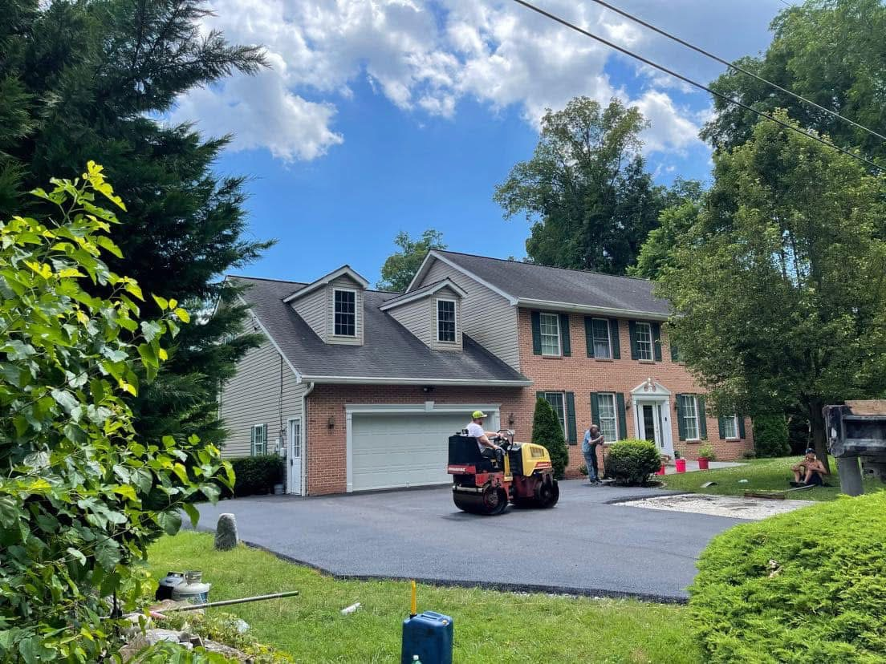

Gravel vs. Asphalt Driveways for Rural West Virginia Properties

Out in the country, driveways are a different animal. A lane off a back road near Gerrardstown, Hedgesville, or Berkeley Springs may run a long way, climb a hill, and cross a ditch before it ever reaches the house. A lot of those lanes start out as gravel. Sooner or later, many owners start asking whether it is time to pave. Here is how gravel and asphalt compare on rural West Virginia property.
The case for gravel
Gravel is quick to put down and simple to add onto. It costs less up front than paving, which matters on a long lane, and it lets some water soak through instead of running off. On a flat, lightly used lane with good ditches, gravel can serve well for years.
Where gravel struggles here
The trouble with gravel in the Eastern Panhandle is our hills, our rain, and our winters. On a slope, heavy rain carries stone downhill and cuts channels down the middle of the lane. Tires push the stone to the sides and leave ruts and potholes. Clay soil under thin stone turns soft in wet weather, and freeze-thaw heaves it in the spring.
Snow is another issue. Plowing or blowing a gravel lane tends to throw stone into the yard and the ditch, and every spring there is less stone on the drive. Gravel also tracks into the garage and house, and a dry summer can mean dust. Keeping it in shape means regular grading and fresh stone, and that upkeep never really stops.
The case for asphalt
A properly built asphalt driveway gives a smooth, solid surface that plows cleanly, sheds water when it is graded right, and stays put on a slope. It does not rut under normal use, there is no stone in the yard, and there is no dust. Upkeep is mostly sealcoating every few years and filling cracks as they show up, which our crack filling vs. sealcoating guide explains.
The tradeoff is the up-front cost, which depends heavily on the length of the lane and how much grading and base work it needs. Our paving cost guide walks through what goes into the price. For the numbers on your lane, call for a free estimate.
What really decides how long it lasts
Whether the top is gravel or asphalt, the base and the drainage decide how well a rural lane holds up. A long drive needs a crown or a cross slope so water leaves the travel lane, ditches that carry water away, and a pipe under the lane at low points where water crosses. On a hillside in Morgan County, that can mean cutting into the bank and building a ditch on the uphill side. Paving a lane that floods or washes out will not fix it. The water has to be handled first.
Can you pave over gravel?
Often, yes. An established gravel lane that has been driven on for years is usually well packed. With grading, fresh stone added where it is thin, and good compaction, it can become part of the base for asphalt. Soft spots, washouts, and areas where mud pumps up through the stone have to be dug out and rebuilt first, or they will show through the new pavement.
A middle ground
There are options between all gravel and all asphalt. Tar and chip gives a paved, rural look with good traction, and our asphalt vs. tar and chip comparison lays out how it compares. Some owners pave only the steepest stretch where gravel keeps washing out, or the area near the house and garage, and keep gravel on the flatter run in between.
Which is right for your property?
Gravel can make sense for a flat, lightly used lane where you do not mind regular upkeep. Asphalt makes more sense when the lane is steep, washes out, gets plowed every winter, or is used every day by cars and trucks. We do the grading, excavation, and paving for rural driveways across the area. Learn more on our driveway paving page, or see how we approach hillside lanes in Berkeley Springs and longer drives around Gerrardstown.
Call us at (304) 579-3872 to walk your lane with us. We will look at the slope, the drainage, and the existing base, and tell you what it will take to pave it. Estimates are free.